<mat-toolbar class="main-navbar">
  <div class="main-navbar__logo">
    
  </div>
  <span class="main-navbar__spacer"></span>
  <div class="main-navbar__actions">
    <div class="navbar-actions">
      <div class="navbar-actions__items">
        <a (click)="navigate('/import')" mat-button>Import CSV</a>
        <a (click)="navigate('/')" mat-button>Search</a>
        <app-login class="actions__login"></app-login>
      </div>
    </div>
  </div>
</mat-toolbar>
